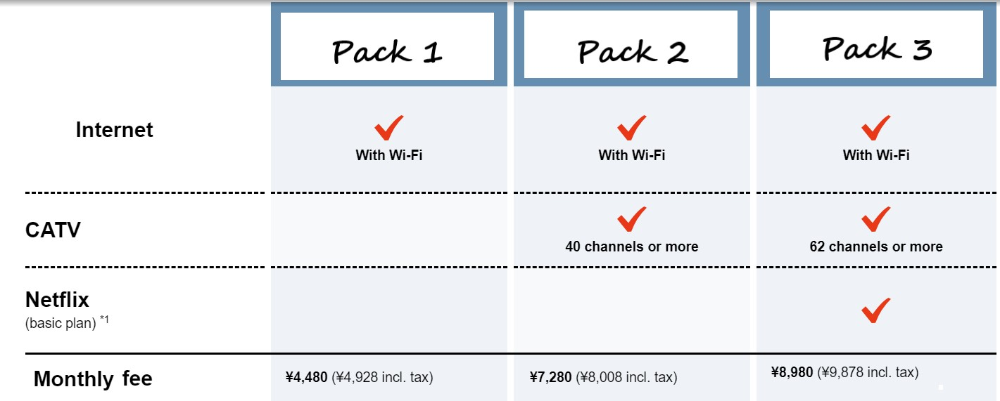

SoftBank Hikari is a fiber optic connection provided by SoftBank which is a major telecommunications operator. SoftBank Hikari offers "Ouchi-Wari Hikari" ("Home Discount Hikari"), a reduced monthly fee exclusive to SoftBank mobile phone users. You will receive a rebate of up to 1100 yen each month by having both your Internet connection and mobile phone services provided by SoftBank.
Features:
Docomo Hikari is a fiber optic connection provided by NTT docomo, one of Japan's leading mobile telecommunications companies and has a large number of users. If you sign up for an internet connection and a smartphone or tablet at the same time, you will receive a permanent discount of 1000 yen on your mobile phone bill.
Features:
Nuro Hikari, one of the most popular fixed internet services in Japan nowadays, is a fiber optic internet connection served by Sony since 2014. Softbank Mobile users get a discount if they also use Nuro's landline phone and internet service.
NURO Hikari is the fastest internet service in Japan, but it is available in limited areas, has a higher cost, and requires an installation fee. for the Kansai region, it is available in Osaka, Hyogo, Kyoto, Shiga, and Nara prefectures.
Features:
AU Hikari is a fiber optic internet service provided by AU, one of the top 3 mobile phone companies in Japan, provided by KDD. With the "au Smart Value" program, you can get discounts of 500 yen to 2000 yen per month on mobile phone bills.
Features:
Rakuten Hikari is a fiber-optic internet service provided by Rakuten Mobile (one of Japan’s largest mobile carriers). It is possible to receive a large discount if you enter a contract with Rakuten Mobile at the same time. you will not be charged monthly fees for home internet for a year.
Features:
J: COM is one of the largest cable television companies in Japan. this company also provide internet service. This connection is recommended for apartments that don't have a fiber optic port.
Home 5G is a service internet which no on-site installation to set up a Wi-Fi network. After subscribing, just connect the 5G-enabled home router to an outlet to set up a Wi-Fi environment. However, the price of the router is about 35000 yen.

Features: